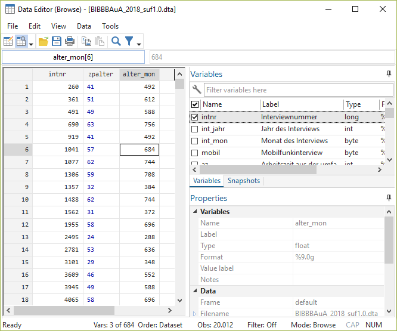
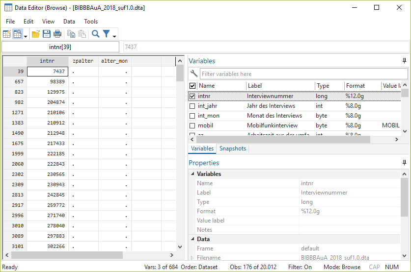

5 Variablen erstellen und verändern
Natürlich sind wir nicht nur darauf beschränkt, bestehende Variablen anzusehen, sondern wir können auch neue Variablen erstellen. Das geht mit gen. Dazu geben wir erst den neuen Variablennamen an und nach =, wie die neue Variable bestimmt werden soll:
gen alter_mon = zpalter * 12
su zpalter | is not a valid command name
r(199);
(176 missing values generated)
Variable | Obs Mean Std. Dev. Min Max
-------------+---------------------------------------------------------
alter_mon | 19,836 566.3073 136.0515 180 1044Wenn wir eine Variable überschreiben möchten, dann müssen wir diese erst mit drop löschen, bevor wir sie überschreiben. Würden wir den gen Befehl von gerade nochmal verwenden, dann bekommen wir eine Fehlermeldung:
gen alter_mon = zpalter * 12 | is not a valid command name
r(199);
variable alter_mon already defined
r(110);
end of do-file
r(110);Wir müssen den Namen age_mon also erst wieder frei machen, dann funktioniert der Befehl auch:
drop alter_mon
gen alter_mon = zpalter * 125.1 gen ist gut, Kontrolle ist besser
Wie gerade gesehen gibt uns Stata aber keinerlei Erfolgsmeldungen. Nach der Bearbeitung oder Neuurstellung von Variablen sollte ein Blick in die Daten folgen. Dazu empfiehlt es sich, wieder auf den browse Befehl zurückzugreifen:
browse intnr zpalter alter_mon 
In Kombination mit if können wir auch einige Spezialfälle betrachten, z.B. ob die Missings richtig verarbeitet wurden:
browse intnr zpalter alter_mon if missing(zpalter)
Häufig empfiehlt sich auch ein summarize und ein Vergleich der Missingszahl der alten und neuen Variable mit mdesc:
summarize zpalter alter_mon
mdesc zpalter alter_mon | is not a valid command name
r(199);
Variable | Obs Mean Std. Dev. Min Max
-------------+---------------------------------------------------------
zpalter | 19,836 47.19228 11.33762 15 87
alter_mon | 19,836 566.3073 136.0515 180 1044
Variable | Missing Total Percent Missing
----------------+-----------------------------------------------
zpalter | 176 20,012 0.88
alter_mon | 176 20,012 0.88
----------------+-----------------------------------------------5.2 Dummy-Variablen erstellen
Wir können auch die Operatoren aus den if-Bedingungen verwenden, um eine Variable zu generieren. Beispielsweise könnten wir eine Dummy-Variable bilden, ob die Befraten im gleichen Bundesland wohnen (Bula) und arbeiten (F233), indem wir den == Operator verwenden. Die entstehende Variable enthält dann immer eine 1 wenn beide Werte gleich sind, unterschiedliche Werte ergeben eine 0:
mvdecode Bula F233, mv(97/99)
gen ao_wo = Bula == F233Die Ergebnisse solcher Veränderungen sollten immer überprüft werden!
tab ao_wo
browse Bula F233 ao_wolist Bula F233 ao_wo in 157/160 | is not a valid command name
r(199);
+-----------------------------+
| Bula F233 ao_wo |
|-----------------------------|
| Rheinlan Rheinlan 1 |
| Rheinlan Baden-W 0 |
| Rheinlan Rheinlan 1 |
| Rheinlan . 0 |
+-----------------------------+Allerdings haben wir für F233 doch missings definiert - was passiert mit denen?
mdesc Bula F233 ao_wo | is not a valid command name
r(199);
Variable | Missing Total Percent Missing
----------------+-----------------------------------------------
Bula | 0 20,012 0.00
F233 | 285 20,012 1.42
ao_wo | 0 20,012 0.00
----------------+-----------------------------------------------Leider gleicht Stata auch Missings mit gültigen Werten ab und vergibt dann dementsprechend 0 oder 1.
Um die Missings als Missing zu behalten, müssen wir mit entsprechenden if-Bedingungen die Zeilen mit Missings in Bula und F233 ausschließen:
drop ao_wo // löschen
gen ao_wo = Bula == F233 if !missing(F233) & !missing(Bula)
mdesc Bula F233 ao_wo | is not a valid command name
r(199);
Variable | Missing Total Percent Missing
----------------+-----------------------------------------------
Bula | 0 20,012 0.00
F233 | 285 20,012 1.42
ao_wo | 285 20,012 1.42
----------------+-----------------------------------------------tab ao_wo | is not a valid command name
r(199);
ao_wo | Freq. Percent Cum.
------------+-----------------------------------
0 | 1,769 8.97 8.97
1 | 17,958 91.03 100.00
------------+-----------------------------------
Total | 19,727 100.005.3 Neue Variablen labeln
Die so erstellte Dummy-Variable können wir auch labeln.
Dazu definieren wir zunächst ein Wertelabel.
Dazu verwenden wir label define, gefolgt von einem Objektnamen für dieses Label (hier aowo_lab) und dann jeweils die Ausprägungen zusammen mit dem entsprechenden Label in ““. Dieses Label-Objekt wenden wir dann mit label values auf die Variable ao_wo an:
label define aowo_lab 0 "ungleich" 1 "gleich"
label values ao_wo aowo_lab
tab ao_wo | is not a valid command name
r(199);
ao_wo | Freq. Percent Cum.
------------+-----------------------------------
ungleich | 1,769 8.97 8.97
gleich | 17,958 91.03 100.00
------------+-----------------------------------
Total | 19,727 100.00Wenn wir das Label verändern, sehen wir das anschließend auch in tabulate:
label define aowo_lab 0 "Ungleich" 1 "Gleich", replace
tab ao_wo | is not a valid command name
r(199);
ao_wo | Freq. Percent Cum.
------------+-----------------------------------
Ungleich | 1,769 8.97 8.97
Gleich | 17,958 91.03 100.00
------------+-----------------------------------
Total | 19,727 100.005.4 Bestehende Variablen verändern
Natürlich können wir auch bestehende Variable verändern, ein Beispiel hatten wir mit mvdecode bereits kennen gelernt. Während es bei mvdecode ja aber nur um Missings geht, gibt es auch Möglichkeiten die gültigen Werte zu verändern.
5.4.1 recode
Mit recode können wir Werte in einer bestehenden Variable verändern. Die veränderten Werte können wir in der bestehenden Variable überschreiben. Die häufig bessere Variante ist aber, die Originalwerte zu behalten und die veränderten Werte in einer neuer Variable abzulegen. Das geht mit der Option ,into(neuer_variablenname)
gkpol zu weniger Kategorien zusammenfassen - zur Erinnerung, das waren die Originalausprägungen:
| Wert | Label | Kategorien |
|---|---|---|
| 1 | unter 2.000 Einwohner | 1 - Klein |
| 2 | 2.000 bis unter 5.000 Einwohner | 1 - Klein |
| 3 | 5.000 bis unter 20.000 Einwohner | 1 - Klein |
| 4 | 20.000 bis unter 50.000 Einwohner | 2 - Mittel |
| 5 | 50.000 bis unter 100.000 Einwohner | 2 - Mittel |
| 6 | 100.000 bis unter 500.000 Einwohner | 3 - Groß |
| 7 | 500.000 und mehr Einwohner | 3 - Groß |
Mit recode können wir diese Ausprägungen zusammenfassen, indem wir immer (alt=neu) angeben. Umcodierungen sollten immer mit tab alt neu überprüft werden:
recode gkpol (2=1) (3=1) (4=2) (5=2) (6=3) (7=3), into(gkpol2)
tab gkpol gkpol2 | is not a valid command name
r(199);
(18928 differences between gkpol and gkpol2)
| RECODE of gkpol
Gemeindekennziffer | (Gemeindekennziffer politisch)
politisch | 1 2 3 | Total
----------------------+---------------------------------+----------
unter 2.000 Einwohner | 1,084 0 0 | 1,084
2.000 bis unter 5.000 | 1,670 0 0 | 1,670
5.000 bis unter 20.00 | 5,002 0 0 | 5,002
20.000 bis unter 50.0 | 0 3,550 0 | 3,550
50.000 bis unter 100. | 0 1,624 0 | 1,624
100.000 bis unter 500 | 0 0 2,970 | 2,970
500.000 und mehr Einw | 0 0 4,112 | 4,112
----------------------+---------------------------------+----------
Total | 7,756 5,174 7,082 | 20,012 Nicht erwähnte Ausprägungen werden einfach übernommen - daher ist 1 hier nicht aufgeführt.
Ein Vorteil von recode ist, dass wir direkt Labels vergeben können, die wir einfach in "" anhängen - nochmal der gleich Befehl mit direkten Labels:
drop gkpol2 // nochmal neu
recode gkpol (2=1 "Klein") (3=1 "Klein") (4=2 "Mittel") (5=2 "Mittel") (6=3 "Groß") (7=3 "Groß"), into(gkpol2) | is not a valid command name
r(199);
(18928 differences between gkpol and gkpol2)
| RECODE of gkpol
Gemeindekennziffer | (Gemeindekennziffer politisch)
politisch | Klein Mittel Groß | Total
----------------------+---------------------------------+----------
unter 2.000 Einwohner | 1,084 0 0 | 1,084
2.000 bis unter 5.000 | 1,670 0 0 | 1,670
5.000 bis unter 20.00 | 5,002 0 0 | 5,002
20.000 bis unter 50.0 | 0 3,550 0 | 3,550
50.000 bis unter 100. | 0 1,624 0 | 1,624
100.000 bis unter 500 | 0 0 2,970 | 2,970
500.000 und mehr Einw | 0 0 4,112 | 4,112
----------------------+---------------------------------+----------
Total | 7,756 5,174 7,082 | 20,012 Tricks, die alle aber zum gleichen Ergebnis führen:
Wir können auch mehrere Werte vor dem = angeben:
drop gkpol2
recode gkpol (1 2 3=1 "Klein") (4 5=2 "Mittel") (6 7=3 "Groß"), into(gkpol2)Außerdem können wir mit Hilfe von / auch Wertebereiche ansprechen:
drop gkpol2
recode gkpol (1/3=1 "Klein") (4/5=2 "Mittel") (6/7=3 "Groß"), into(gkpol2)recode auch folgende Hilfsausdrücke verwenden, bspw. recode gkpol .... (6/max =3 "Groß"),....:
| expr | expl |
|---|---|
| min | Minimalwert |
| max | Maximalwert (missings werden hier ausnahmsweise nicht mit eingeschlossen) |
| else or * | alle anderen Werte |
| miss | alle missing Werte, die nicht von einer anderen Regeln angesprochen werden |
| nonmiss | alle nicht-missing Werte, die nicht von einer anderen Regeln angesprochen werden |
5.4.2 replace: Informationen aus mehreren Variablen in einer Variable zusammenführen
Ein weiterer nützlicher Befehl ist replace. Hier können wir bestehende Variable verändern. Das ist inbesondere in Zusammenspiel mit if-Bedingungen hilfreich.
Manchmal liegt eine interessierende Information aufgeteilt auf mehrere Variablen vor. Ein Beispiel hierfür ist die Erwerbskonstellation von Paaren in der Erwerbstätigenbefragung. Wir können aus den Informationen F1600 (Familienstand), F1601 (leben die Befragten mit der*der Partner*in zusammen?) und F1603 (ist Partner*in berufstätig?) eine Variable mit 3 Ausprägungen bauen:
- 1 “nicht verh./alleine lebend”
- 2 “verh. & 2 Erwerbspersonen im HH”
- 3 “verh. & 1 Erwerbsperson”
gen erw_hh = . // leere Variable erstellen
replace erw_hh = 1 if F1601 == 2 // alleine -> leben nicht zusammen
replace erw_hh = 2 if F1601 == 1 & F1603 == 1 // zusammenlebend, Partner*in erwerbstätig
replace erw_hh = 3 if F1601 == 1 & F1603 == 2 // zusammenlebend, Partner*in nicht erwerbstätig
replace erw_hh = 1 if inlist(F1600,2,3,4) // keine Partnerschaft -> auch auf 1
*! unverheiratete werden hier nicht als Partnerschaften behandelt
lab define erw_lab 1 "nicht verh./alleine lebend" 2 "verh. & 2 Erwerbspersonen im HH" 3 "verh. & 1 Erwerbsperson"
lab values erw_hh erw_lab
tab erw_hh5.5 Übungen 5
- Laden Sie den BIBB/BAuA Erwerbstätigenbefragung 2018 (
BIBBBAuA_2018_suf1.dta).
5.5.1 Übung 5-1
- Erstellen Sie eine Dummy-Variable, die erfasst, ob die Befraten in der gleichen NUTS-2-Region leben und arbeiten
nuts2enthält den Wohnort,F233_nuts2enthält den Ort der Betriebsstätte- Schließen Sie die Missings aus (
99996bis99999) - Erstellen Sie die Variable mit
gen. Denken Sie an den==Operator. - Kontrollieren Sie das Ergebnis mit
browse - Definieren Sie Labels für diese Dummyvariable: “Wohnort = Arbeitsort” “Wohnort != Arbeitsort”
- Verändern Sie das Label
S1von 1 = “männlich” und 2= “weiblich” auf 1 = “Männer” und 2 = “Frauen.”
- Lassen Sie sich mit
tab S1die Variable ausgeben. - Verändern Sie die Labels mit
label define .... , replace - Lassen Sie sich mit
tab S1die Variable erneut ausgeben - hat das geklappt wie gedacht?
5.5.2 Übung 5-2
- Fassen Sie die Variable “Gesamtnote Schulabschluss” (
F1108) in drei Kategorien zusammen:Wert Label neu 1 sehr gut 1 - (sehr) gut 2 gut 1 - (sehr) gut 3 befriedigend 2 - bestanden 4 ausreichend 2 - bestanden 7 keine Note vorgesehen 3 - fehlend 8 weiß nicht 3 - fehlend 9 keine Angabe 3 - fehlend
- Nutzen Sie die Label-Funktion von
recode
5.5.3 Übung 5-3
Fassen Sie die Variablen
F209( Arbeitszeit normalerweise zwischen 7 und 19 Uhr?) undF223(mindestens einmal im Monat Sonntagsarbeit) zu einer Variablea_zeitmit folgenden Ausprägungen zusammen:1 zwischen 7-19 Uhr & keine Sonntagsarbeit
2 nicht zwischen 7-19 Uhr, aber keine Sonntagsarbeit
3 zwischen 7-19 Uhr aber Sonntagsarbeit
4 nicht zwischen 7-19 Uhr und Sonntagsarbeit
(Für Tipp weiter nach unten Scrollen)
F209 == 1 & F223 == 2 // 1 zwischen 7-19 Uhr & keine Sonntagsarbeit
F209 == 2 & F223 == 2 // 2 nicht zwischen 7-19 Uhr, aber keine Sonntagsarbeit
F209 == 1 & F223 == 1 // 3 zwischen 7-19 Uhr aber Sonntagsarbeit
F209 == 2 & F223 == 1 // 4 nicht zwischen 7-19 Uhr und Sonntagsarbeit